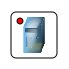

| Manual NetEmul | ||
|---|---|---|
| Prev. | Next | |

So the computer in the program looks. We think it is necessary to explain to nobody assignment of this device in a real life. In our program it fulfils the limited set of function, namely makes sending of messages from one computer to another and as there is a possibility instal the certain programs linked to operation of a network, and to view arp-tables and routings
| Prev. | Main | Next |
| Network devices | On level above | HUB |